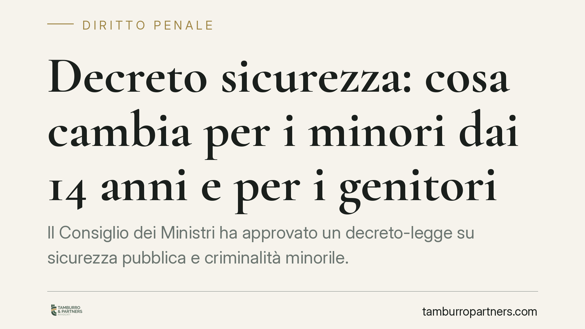

Decreto sicurezza: cosa cambia per i minori dai 14 anni e per i genitori
Il Consiglio dei Ministri ha approvato un decreto-legge su sicurezza pubblica e criminalità minorile. Cambiano l'accertamento dell'imputabilità dai 14 anni, arrivano sanzioni per i genitori, un nuovo delitto di violenza organizzata in piazza e un inasprimento di pene e misure cautelari. Vediamo cosa muta davvero per famiglie e soggetti coinvolti.

Il fatto
Il Governo ha varato un decreto-legge che tocca due fronti distinti ma collegati: la criminalità minorile e l'ordine pubblico nelle manifestazioni. Trattandosi di decreto-legge, le norme sono entrate in vigore subito, ma dovranno essere convertite in legge dal Parlamento entro sessanta giorni, pena la perdita di efficacia. È un dettaglio che conta: il testo potrebbe cambiare in sede di conversione.
Le novità più rilevanti riguardano l'imputabilità dei minori dai quattordici anni, l'introduzione di responsabilità a carico dei genitori e un nuovo delitto legato alle violenze organizzate in piazza.
Inquadramento normativo
Il perno è l'art. 98 del Codice penale. La regola di base resta invariata: il minore che ha compiuto quattordici anni ma non ancora diciotto è imputabile solo se, al momento del fatto, era "capace di intendere e di volere". Sotto i quattordici anni l'imputabilità è sempre esclusa.
Il decreto interviene sulle modalità di accertamento di tale capacità. L'obiettivo dichiarato è rendere più rigorosa e tempestiva la valutazione del grado di maturità del minore, elemento che il giudice deve verificare caso per caso e non può presumere.
Sul versante dell'ordine pubblico, il decreto configura un nuovo delitto che punisce le violenze commesse in forma organizzata nel corso di manifestazioni, con un inasprimento sia delle pene edittali sia delle misure cautelari applicabili. Vengono inoltre potenziati i poteri di prevenzione affidati a questore e prefetto, che agiscono con strumenti amministrativi distinti dal processo penale.
Implicazioni pratiche
Per le famiglie il punto più delicato è la responsabilità dei genitori. Il decreto introduce conseguenze sanzionatorie a loro carico in relazione a condotte dei figli minori. Qui occorre distinguere con attenzione: la responsabilità penale resta personale e non si trasferisce. Le misure a carico dei genitori hanno natura diversa — tipicamente sanzionatoria o relativa agli obblighi di vigilanza e cura — e vanno lette alla luce dei doveri genitoriali già previsti dal Codice civile.
Per il minore imputabile, il rafforzamento dell'accertamento sulla maturità e l'inasprimento delle misure cautelari significa un rischio concreto di provvedimenti più incisivi già nelle fasi iniziali del procedimento, prima di qualsiasi condanna.
Per chi partecipa a cortei e manifestazioni, il nuovo delitto di violenza organizzata amplia l'area del penalmente rilevante e può incidere anche sulla posizione di chi si trovi in contesti dove scoppiano disordini. La linea tra partecipazione lecita e condotta punibile diventa più sottile e andrà definita dalla prassi applicativa.
Infine, i poteri di prevenzione di questore e prefetto operano su un binario autonomo: un provvedimento amministrativo può colpire anche in assenza di condanna, con tempi e logiche proprie.
Cosa fare in concreto
- Verificate subito la natura del provvedimento ricevuto: distinguete tra atto penale (procura, tribunale) e misura amministrativa di prevenzione (questore, prefetto), perché termini e difese sono diversi.
- Non sottovalutate la fase cautelare: se è coinvolto un minore, attivatevi immediatamente, perché le decisioni più pesanti arrivano prima del merito.
- Documentate la condotta effettiva in caso di contestazioni legate a manifestazioni: la posizione individuale va ricostruita rispetto alla contestazione di organizzazione o violenza.
- Genitori: raccogliete elementi sugli obblighi di vigilanza concretamente esercitati, utili a circoscrivere eventuali profili di responsabilità.
- Monitorate la conversione in legge: il testo può essere modificato entro sessanta giorni, con effetti anche sulle situazioni in corso.
Una cautela sui tempi
Trattandosi di normativa appena introdotta e ancora soggetta a conversione, la giurisprudenza applicativa è assente. Consigliamo di valutare ogni posizione in modo specifico, senza trasporre automaticamente soluzioni elaborate sulla disciplina previgente.
---
*Contributo informativo a cura di Tamburro & Partners - Avv. Giuseppe Tamburro. Non costituisce parere legale.*
Ogni condominio ha una storia a sé.
Se gestisci un'amministrazione e vuoi un confronto su una specifica questione condominiale, scrivi allo studio. Ti rispondiamo entro un giorno lavorativo.